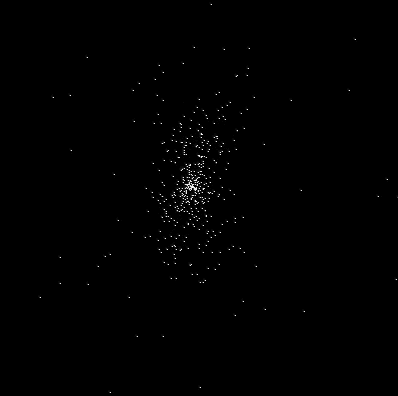
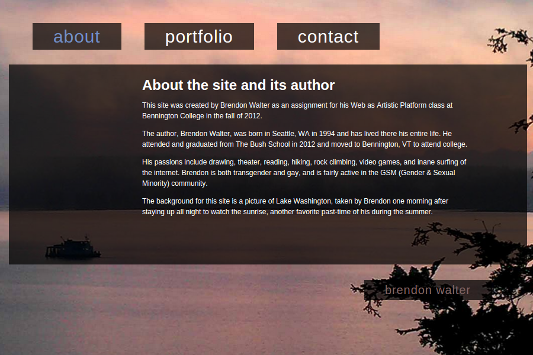
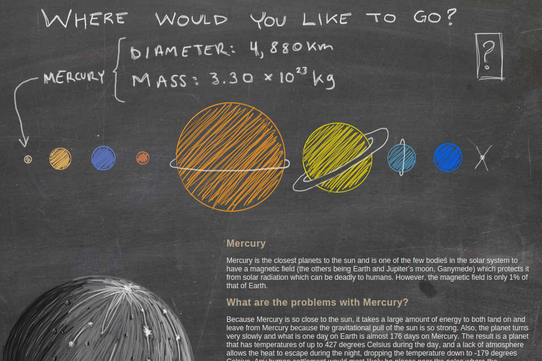

Data Structures in C - Fall 2014
N-body problem: Brute Force
{kind=link}
For a final project, I wanted to create an implementation of the Barnes-Hut algorithm for the N-body problem. Unfortunately, I did not have time to finish this, but I was able to successfully implement it via brute force. This simulation was done in only two dimensions, and the gif on the right shows the results with 500 bodies.
Although the course itself was taught in C, I took the time to learn some C++ for this project. The full source code will be up on github.
How to Build a Radio Telescope - Spring 2014
In this class, we built a radio telescope following a guide from MIT Haystack. We were able to successfully create the telescope itself and mount it on the roof of the science building as well as work the code from Haystack to work on our computers and telescope.
Operating Systems - Spring 2014
We created a simple operating system, RumuntOS, for a Raspberry Pi written in C and ARM Assembly. My mine focus in this group project was to create the process tree for the operating system, which was implemented as a b-tree written in C.
Distributed Systems - Fall 2013
As a group, we created an implementation of the Google File System (GFS) written in Python and distributed across multiple Raspberry Pis. The final product allowed for users to upload and download files, which would be stored in redundant parts across various servers.
Web As Artistic Platform - Fall 2012
Personal Site
As a part of Web As Artistic Platform, students were required to make a personal site - a site which would act as a 'homepage' for us to put all of our work for the term onto, as well as any other work we wanted.
NOLI ME

This site came about through a misunderstanding of an assignment...
I was inspired by jodi to play around with hiding messages within the site, both on the webpage itself and in the source code.
The Final Frontier?
For my final project for Web As Artistic Platform, I decided to create a site which would give information about the solar system - specifically to encourage space exploration.
This is a project I am planning on continuing working on, and did so a bit in my final project for Astrogeolgy in Spring, 2015.